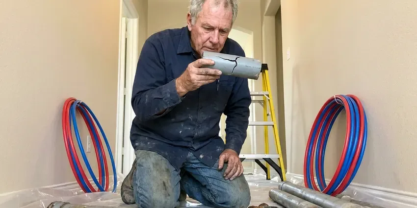

Well Pump Replacement in Alameda, CA
Well pump replacement in Alameda, CA from FBL Plumbing, matched to your well and household.
- Constant Pressure Options
- Fast Well Pump Service
- Spare Pumps Stocked
- No-Water Emergency Calls

Dry Faucets Can Not Wait. We Replace Well Pumps in Alameda, CA.
Call FBL Plumbing about your well and get a clear quote.
Well Pump Replacement in Alameda, CA for Deep and Shallow Wells
FBL Plumbing handles well pump replacement for homes and small businesses across Alameda, CA. Low pressure, sputtering faucets and a pump that runs without stopping all point to a pump on the way out, and we can usually confirm it in under an hour. The fix is often the same day.
Work we handle every week:
- Constant pressure VFD systems for even flow
- Two-Wire and Three-Wire Submersibles
- Pressure Tank Precharge Setup

Additional Plumbing Replacement Services in Alameda, CA
When repairs are no longer enough, our replacement services in Alameda, CA deliver modern, efficient equipment installed right.


Customers
Why Choose FBL Plumbing for Well Pump Replacement in Alameda, CA?
Quality shows up years later. Correct setting depth, new wire, heat-shrink splices and a safety rope keep a pump running long after a rushed job quits. Every install gets the same treatment.
- Quality Pumps, We install pumps from makers with parts that are easy to get, so repairs stay simple.
- Proper Tools, We use powered pump hoists and proper clamps on deep wells.
- Trained Crews, Our plumbers work on wells every week and know the failure points.
Citywide Coverage
From the edge of town to properties miles past it, FBL Plumbing covers well pump replacement throughout Alameda and the farm roads beyond. Depths change from one road to the next. We have seen most of the setups in the area.
Experienced Team
Each tech at FBL Plumbing carries a megohmmeter and an amp clamp, and uses both before recommending a new pump to anyone. You get numbers, not guesses. We share them with you.
Safety-First Approach
Every part of the job, from wire splices to tank precharge, gets checked against the manufacturer's specs before we leave. Heat-shrink splices only. Tape splices fail underwater.
Trusted Certified Alameda Plumbing Services Professionals
At FBL Plumbing, we are proud to offer certified plumbing services throughout Alameda, CA. Those papers on the wall mean something. Every repair, install and maintenance visit follows strict safety and quality rules, and the plumbers doing the work carry recognized industry credentials.
Call Us Now PHCC Plumbing Contractor Recognition
PHCC Plumbing Contractor Recognition Better Business Bureau (BBB) Accreditation
Better Business Bureau (BBB) Accreditation Angi Certified Pro
Angi Certified Pro ISO 9001 Quality Management Certification
ISO 9001 Quality Management CertificationSubmersible and Jet Pump Replacement in Alameda, CA
Constant Pressure Pump Systems in Alameda
Franklin SubDrive and Grundfos SQE are the two constant pressure systems we install most. They get by with a much smaller tank because the drive matches pump speed to demand. The soft start is easier on the motor. The upfront cost is higher.

Jet Pump Seal and Motor Replacement in Alameda, CA
Single-stage and two-stage jet pumps wear out at the seal and impeller, and a leaking shaft seal shows up as a puddle under the motor. New pump, primed and tested. Then we watch the gauge through a full cycle.
Jet Pump Replacement in Alameda, CA
Jet pumps sit above ground, in a well house or basement, and pull water up by suction from wells where the water level is within about 25 feet. A two-pipe deep-well jet can reach further down at the cost of efficiency. The common failure is losing prime. Usually a leaking foot valve or a cracked suction line lets the water fall back down the well, so we check both before we blame the pump.
Pump and Pressure Tank Matching in Alameda
Pump and tank work as a pair. A tank that is too small or has lost its air charge makes the pump start dozens of extra times a day, and every start heats the motor. We check it on every pump job.
Emergency Well Pump Replacement in Alameda
Dry faucets on a well-only property mean no flushing or cooking, so we treat those as same-day calls whenever the crew and the weather allow. We keep 1/2 and 3/4 HP submersibles on the truck. We also bring splice kits and switches.
Emergency Well Pump Service in Alameda, CA
Lost water at the house? Call (669) 319-2034 and tell us what the pressure gauge reads. Zero with the pump running points one way, zero with the pump silent points another, and that tells us which parts to load. Same-day water is the goal.
What a Well Pump Job Costs in Alameda, CA
A well pump job usually runs a few thousand dollars, and the pump itself is often less than half of that. Labor and hoist time, along with new wire and pipe, make up the rest. You see every line item.

Solar Well Pump Systems in Alameda, CA
Solar well pumps make sense for livestock tanks and cabins where running power from the meter would cost more than the pump itself. A DC pump and a controller run off a few panels during daylight. You store water, not electricity. Panel count comes from how many gallons you need a day.
Well Pump Replacement Near Me in Alameda, CA
Wells around Alameda vary a lot in depth, even on the same road, so the last pump we pulled down the street tells us only so much about yours. Your well log is the starting point. Without a log, we measure with a sounder.
Long gravel driveways and well heads out past the barn are normal for us. Our service area runs well past the edge of town, out to properties where the well is a quarter mile from the road. Morning calls usually get same-day service.
FBL Plumbing at a Glance
- Licensed and insured plumbers serving Alameda, CA
- Same-day appointments and 24/7 emergency response
- Clear written estimates, no hidden fees
- 4.8-star rated by 834+ Northern California customers
Alameda Map
Alameda Information
- Population
- 75,353
- Area codes
- 510/628/415
- Service area
- Alameda and towns within a 40 mile drive
- Nearby
- Oakland, San Leandro, South San Francisco, Berkeley
Well depth and changing water levels decide which pump fits on homes in Alameda, CA.
Talk to a Plumber
Reach out to FBL Plumbing for reliable plumbing work done by licensed pros in Alameda, CA.
Our Specialized Plumbing Services in Alameda, CA
At FBL Plumbing, we handle the full list of plumbing services across Alameda, CA. From leak detection to full system installs, our team works fast and charges fair prices on homes and commercial properties alike. Explore our core services below:


Our Well Pump Process in Alameda, CA
We get water back fast by testing first and pulling second.
Call Us
Call (669) 319-2034 and tell us about your well. We schedule a visit for testing.
Test the Controls
We test the switch, wiring and tank. Then we confirm whether the pump needs replacing.
Pull and Replace
We pull the old pump and set the new one with new wire and pipe as needed. We test pressure and flow before we leave.
Frequently Asked Questions About Well Pump Replacement in Alameda
Plan on $1,500 to $3,500 for a typical residential job. A deep well or a bigger pump pushes the price up, and so does a new tank or wire. The quote follows the diagnosis.
Yes, alone or with a pump. A tank with a failed bladder will short cycle even a brand new pump, so we test the air charge on every well call we run. Tank swaps take about two hours.
Requirements vary across Northern California, and some counties want a well or plumbing permit for pump work. If the county requires it, we file the permit and book the inspection, which puts the work on record. You do not have to handle it.
Goulds, Grundfos, Franklin Electric and Sta-Rite, mostly. Which one we recommend depends on your well depth, the water quality and whether you want steady constant pressure at every faucet. Parts for all four are easy to get.
Shallow well pumps, usually jet pumps, sit above ground and pull water by suction from about 25 feet or less. Deep well pumps are submersibles that hang in the water and push it up. Physics sets that 25-foot limit.
Plenty of handy homeowners can swap a pressure switch, but a pump pull is a different job. Doing it right takes a hoist, a second person and the meters to test the motor and wire before it goes back down. Most people hire it out.
Eight to fifteen years is common. Sediment and frequent cycling shorten that.
If the tank is old or waterlogged, replace it with the pump. A failed tank causes rapid short cycling, which is one of the most common reasons submersible motors burn out early.
Hear From Customers Who Hired Our Plumbing Experts

Karen W.
After our third pinhole leak in copper, we stopped patching. FBL Plumbing gave us a written plan room by room and repiped the house in PEX while we stayed in it. The crew covered our floors every morning and cleaned up every night.
Repiping · Hayward, CA
Carlos V.
Our house still had galvanized pipe, and upstairs the shower was a trickle. The crew repiped everything in PEX over three days and patched every drywall hole before they left. The pressure difference is night and day.
Repiping · South San Francisco, CANathan E.
Our tankless heater kept throwing an error code and shutting off mid shower. The tech flushed the heat exchanger, which was full of scale, and replaced a bad flow sensor. Hot water has been steady for half a year now.
Water Heater Repair · Oakland, CA
Megan L.
Our upstairs tub drained so slowly that every shower turned into a bath. FBL Plumbing pulled a wad of hair out of the stopper and then snaked the line past the trap. Three months later it still drains fast.
Drain Cleaning · Castro Valley, CAEmily R.
The shutoff valve under our kitchen sink snapped off in my hand on a Sunday morning. FBL Plumbing had someone out by early afternoon. He replaced both angle stops with quarter turn valves and showed me where our main shutoff was, which I honestly did not know.
Plumbing Repair · Berkeley, CADiane F.
My kitchen faucet had dripped for months and I finally got tired of hearing it at night. FBL Plumbing came out the next morning, replaced the cartridge and the O rings, and tightened a loose base that was letting water under the sink.
Faucet Repair · South San Francisco, CA